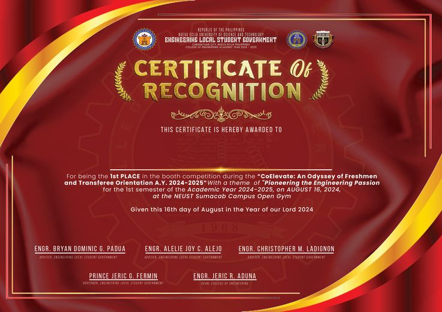
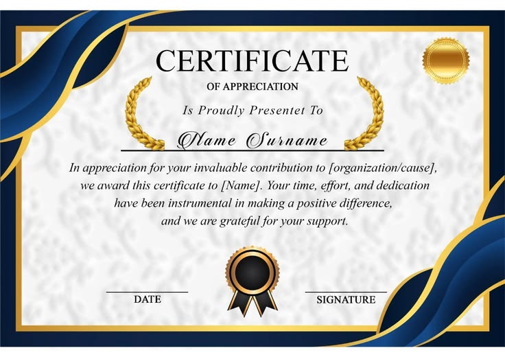
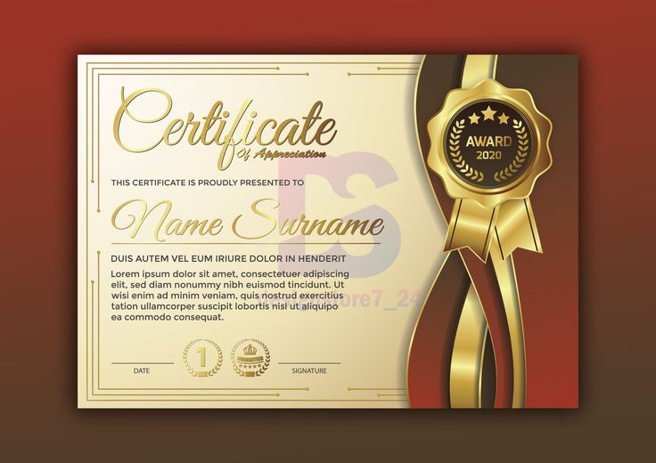
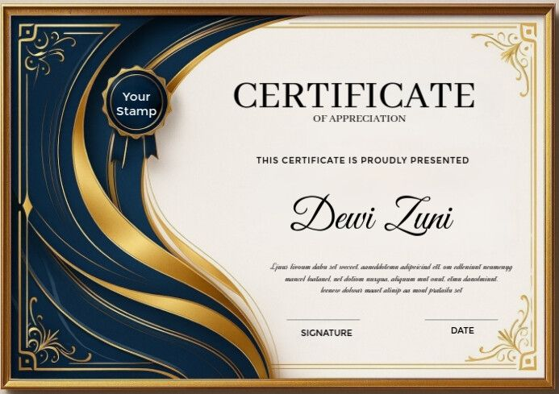
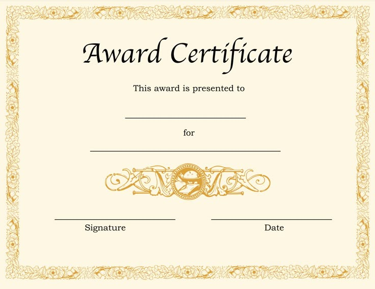

Scaling Organic Search
Through Data-Driven SEO
Hi, I'm Mea Lourine Sasam. I optimize digital architecture, local visibility networks, and automated content frameworks to turn search engine queries into sustainable conversions[cite: 1].

7+
Years Experience
The Strategic Mindset
Organic Visibility Architecture
I build structured digital funnels. From WordPress on-page structures to local map ranking systems, my primary objective is to build sustainable, scalable organic traffic streams that consistently convert visits into valuable client actions[cite: 1].
AI-Assisted Efficiency
I blend deep technical SEO execution with cutting-edge artificial intelligence workflows[cite: 1]. By engineering customized AI schemas, prompt loops, and structured keyword funnels, I output editorial-grade content and metadata quickly while maintaining high ranking authority[cite: 1].
Academic Base
Bachelor of Elementary Education[cite: 1]
Cebu Institute of Technology – University[cite: 1]
My professional educational background provides me with exceptional structured communication, process presentation, and administrative leadership skills[cite: 1].
Verified Capabilities
Strategic Core SEO
Enterprise Applications & AI
Milestones & History
SEO Specialist / Local SEO Consultant[cite: 1]
Independent Practice (Healthcare, Legal, & Home Services)[cite: 1]
Leading end-to-end strategic search visibility optimizations across multiple client portfolios globally[cite: 1].
- Manage localized Google Business Profile strategies, producing high-impact maps listings and geo-targeted ranking spikes[cite: 1].
- Structure internal linking plans and schema updates using advanced on-page setups[cite: 1].
- Implement highly efficient AI-assisted generation workflows for key content briefs, meta frameworks, and social assets[cite: 1].
SEO Manager[cite: 1]
Shipwreck Studio[cite: 1]
Directed optimization models targeting structural high-intent search spaces to maximize user acquisition loops[cite: 1].
- Developed and deployed location-specific search landing pages designed to secure dominant organic positioning[cite: 1].
- Conducted link building outreach campaigns, acquiring premium contextual links on over 40 high-authority sites[cite: 1].
- Collaborated with engineering to patch crawl-budget bottlenecks, improve loading metrics, and ensure fluid indexing[cite: 1].
Link Builder[cite: 1]
Dream Digital[cite: 1]
Executed deep off-page validation structures, securing higher domain authority and brand trust[cite: 1].
- Ran deep local directories audit passes and NAP cleanups, generating a 25% growth average in client local maps indexing[cite: 1].
- Engineered off-page digital assets and structured infographic distributions, boosting organic referral traffic segments by 18%[cite: 1].
- Ran structural disavow processes on low-quality/toxic footprints to safeguard overall brand search integrity[cite: 1].
Digital Marketing Specialist[cite: 1]
Midstream Marketing[cite: 1]
Guided full digital site checks and on-page modifications to build initial ranking profiles[cite: 1].
- Successfully guided over 10 high-value keywords from structural ranking obscurity (Page 3) into top 5 search listings[cite: 1].
- Optimized fundamental page titles, heading structures, and internal paths to elevate overall website engagement levels by 15%[cite: 1].
Certifications & Training[cite: 1]

SEO Sprint (Taglish)[cite: 1]
Gab Valimento – SEOWorkout, Dec 2024[cite: 1]Focus on structural local planning, competitive analysis, and operational sprint models[cite: 1].

WOSCON 2024 Attendee[cite: 1]
Workshop & SEO Conference[cite: 1]Analyzing modern algorithms, local ranking trends, and automated crawling updates[cite: 1].

PinoySEO Bootcamp[cite: 1]
PinoySEO Series[cite: 1]Advanced agency client strategy and scaling processes specifically for SEO campaigns[cite: 1].

Premium Local SEO Masterclass[cite: 1]
Adrian Gaňa – CademyDR[cite: 1]Completed 50+ deep modules covering advanced map configurations, local listings, and regional scripts[cite: 1].

Industry Endorsements[cite: 1]
Verified Digital Achievements[cite: 1]Ongoing educational commitments tracking next-generation search frameworks[cite: 1].
Let's build a secure search acquisition route.
Discuss open full-time opportunities, organic contract work, or complete sitewide technical analyses.